Obra por Etapas Como montar em 3 fases para já receber pintinhas de 35 dias
Você não precisa construir tudo de uma vez antes de trazer as pintinhas. Fazendo na ordem abaixo, elas já chegam 100% protegidas contra timbú, rato e chuva na Fase 1:
Kit Econômico Ferramentas: o que realmente precisa vs o que improvisar de graça (R$ 0)
Abaixo estão todas as ferramentas (com indicação de comprar/emprestar ou improvisar grátis). Clique na foto para ampliar.
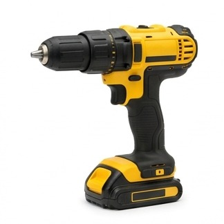
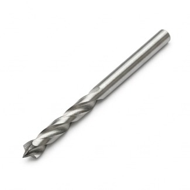


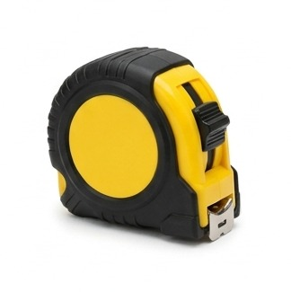
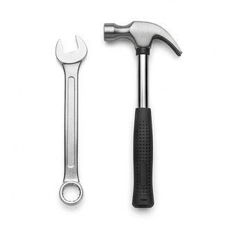


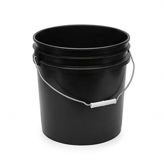


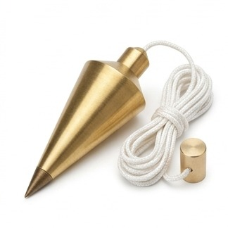
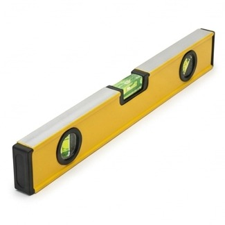
Lista Enxuta Materiais Econômicos (corte de ~45% no gasto, sem coelhos)
Sem mureta de tijolo, com 5 estacas, 1 saco de cimento, tábuas reaproveitadas e itens caseiros R$ 0. Clique na foto para ampliar.
| ✓ | Foto | Etapa | Material | Especificação / Dica de Economia | Quantidade |
|---|---|---|---|---|---|
 | Limpeza | Água sanitária + Cal hidratada | Lavar e caiar (2 demãos) os 2 canis | 2 L água sanit. + 4 kg cal | |
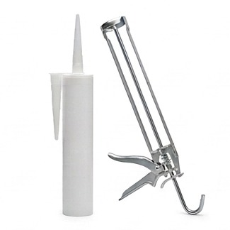 | Limpeza | Selante PU ou massa acrílica | Vedar encontro telhado / muro do fundo | 1 tubo (ou resto de massa) | |
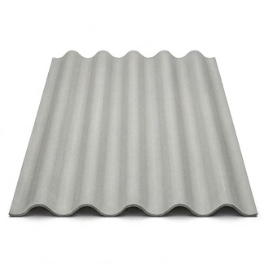 | Telhado | Telha fibrocimento (JÁ TEM) | Eternit 5 mm Tropical 1,10 × 1,80 m (2023) | 3 folhas (já tem!) | |
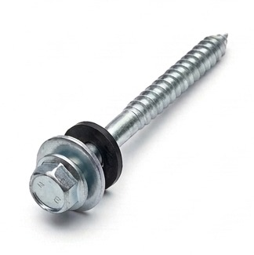 | Telhado | Parafuso p/ telha c/ vedação | 5/16" × 110 mm (c/ arruela + borracha EPDM) | 15 a 18 unidades | |
 | Telhado | Caibro 5 × 5 cm × 3,00 m | 2 p/ terças + 3 p/ caibros de 2 m (das sobras de 1 m saem os 3 pontaletes!) | 5 peças de 3,00 m | |
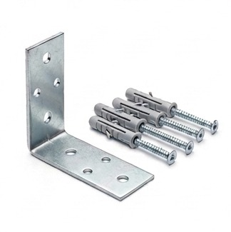 | Telhado | Buchas 10 mm + parafusos | Prender terça no muro; pontaletes vão chumbados nos furos dos tijolos | 8 buchas 10 mm | |
 | Solário | Cimento + Areia média | Só 1 saco (chumbar pontaletes e 5 estacas, sem mureta!) | 1 saco 50 kg + 5 latas areia | |
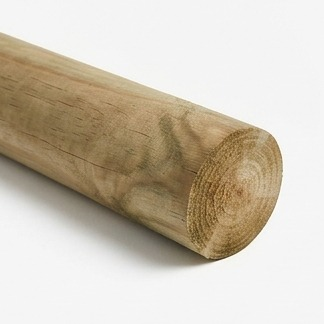 | Solário | Estacas eucalipto tratado (5 unid.) | 3 grossas (cantos/porta) + 2 finas (meio frente/lateral), 2,20 m | 5 unidades no total | |
 | Solário | Sarrafo de madeira | 5 × 2,5 cm × 3,00 m (topo + rodapé a 3 cm do chão + porta) | 7 peças de 3,00 m | |
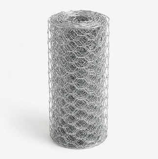 | Solário | Tela hexagonal (galinheiro) 1" | 1,50 m alt. (vai direto até o chão; sobra 10 cm dobrado c/ pedras) | 15 metros | |
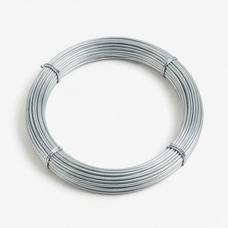 | Solário | Arame liso galvanizado nº 14 | 3 fios do teto + fio de amarração sob o beiral | 15 metros | |
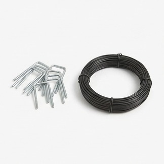 | Solário | Grampos 3/4" + Arame recozido nº 18 | Prender telas na madeira e nas grades | 1 pct grampo + 1 rolo arame 18 | |
 | Solário | Pregos (17×21 e 18×27) + buchas 8 mm | Sarrafos, caibros e apoio dos poleiros | 1 kg pregos + 4 buchas 8 mm | |
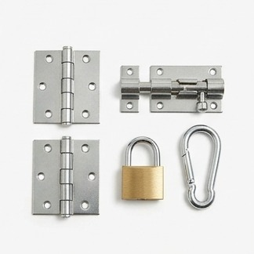 | Solário | Ferragens da porta | 2 dobradiças + 1 ferrolho + 1 mosquetão/cadeado | 1 kit | |
 | Canis | Tela pinteiro hexagonal 1/2" | Bem mais barata que soldada! Fecha grades dos canis e vãos altos | 8 metros (larg. 1,00 m) | |
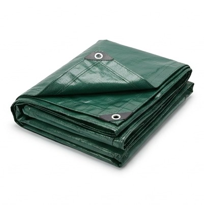 | Canis | Lona ou saco de ráfia aberto (R$ 0) | Metade inferior da grade do Canil 1 | 1 pedaço 1,30 × 0,60 m | |
 | Canis | Poleiros (bambu ou madeira 4–5 cm) | Lixados e soltos p/ lavar | 2 peças de 1,30 m | |
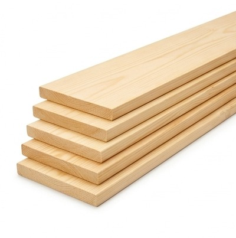 | Canis | Tábuas de pinus 20 cm × 3,00 m | Para os 3 ninhos (ou 3 caixotes plásticos / baldes p/ economizar!) | 2 tábuas de 3,00 m | |
 | Manejo | Maravalha grossa (peça grátis) | Pedir raspa de madeira em marcenaria do bairro (não pó fino!) | 2 sacos grandes | |
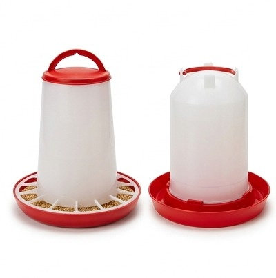 | Manejo | Bebedouro 5 L + Comedouro caseiro | Comedouro feito com galão 20 L / garrafa PET; comprar só bebedouro | 1 bebedouro (~R$ 20–25) |
Guia do Iniciante Cada mínimo passo ilustrado: massa, tijolo, telha e madeira
Mesmo sem experiência prévia de pedreiro ou carpinteiro, siga exatamente a sequência visual abaixo:
1. Como preparar a massa de cimento e areia ▶ Vídeo (Cleoney Soares)
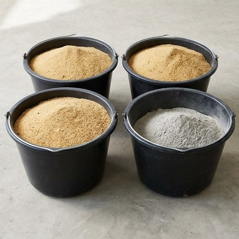
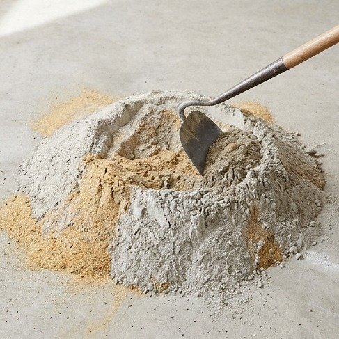
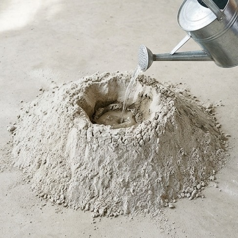
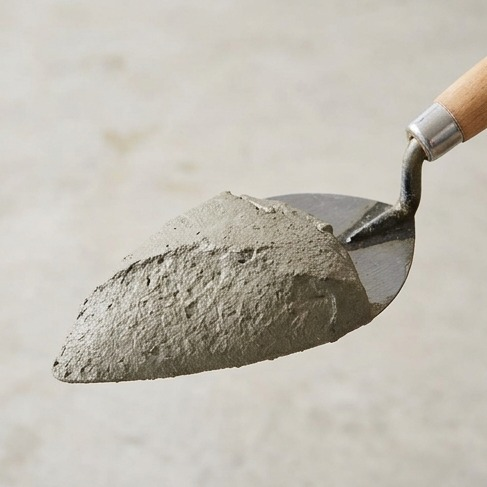
2. Como assentar tijolo reto (mureta de 2 fiadas) ▶ Vídeo (Faça Sua Obra)


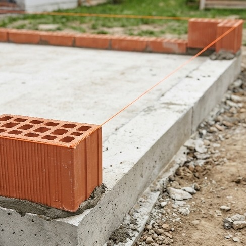
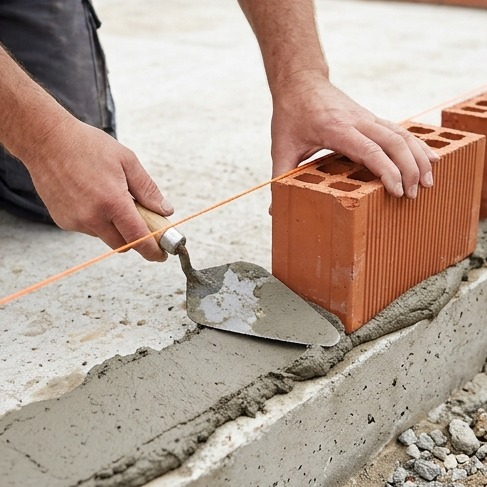
3. Como furar/parafusar Eternit 5 mm e cortar madeira no esquadro ▶ Vídeo Telha · ▶ Vídeo Serrote
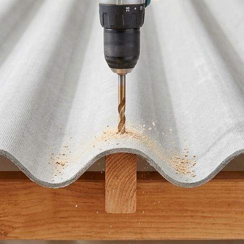
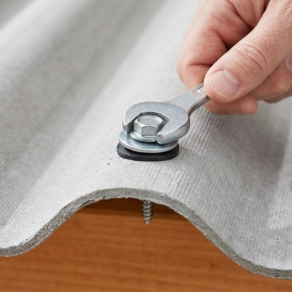
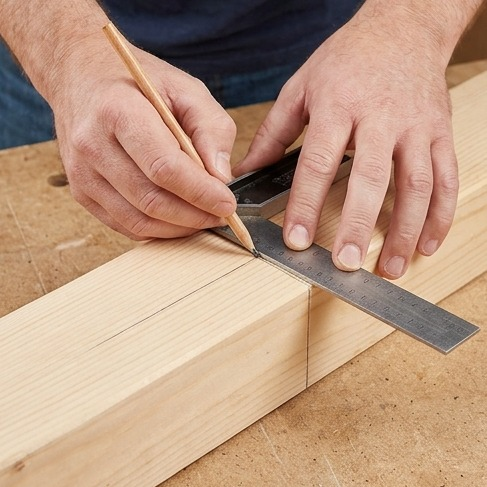

Etapa 0 · Antes de tudo Limpeza, infiltração, cal e desratização 🔍 Abrir Etapa 0 em Outra Aba (Animada + Materiais + Fotos)
- Esvaziar e tirar madeiras velhas: retire todas as tábuas e canos de cima do telhado e também as madeiras escuras antigas apoiadas nos buracos/entalhes das muretas de `1,20 m` (evita cupim, piolho de galinha e escorpiões).
- Tampar os buracos das muretas: com a própria massa de cimento que você preparar para os pontaletes, preencha os buracos/entalhes onde ficavam essas madeiras velhas nas paredes dos canis (elimina esconderijos de escorpião).
- Organizar o Canil 2: empilhe todas as cerâmicas apenas na metade direita (`0,65 m`) do Canil 2. Deixe a metade esquerda (`0,65 m`) e o Canil 1 vazios.
- Achar e vedar a infiltração: as manchas verdes no fundo dos canis vêm do encontro antigo da telha com o muro. Ao subir o telhado para `2,05 m`, vede o encosto com selante PU / massa acrílica.
- Lavar e passar cal (2 demãos): escove piso e paredes com água + água sanitária, enxágue e deixe secar. Passe 2 demãos de cal hidratada e aguarde 24 h de secagem.
- Desratização prévia: se as bolinhas no patamar forem fezes de rato, faça o controle e recolha todas as iscas antes de soltar as aves.

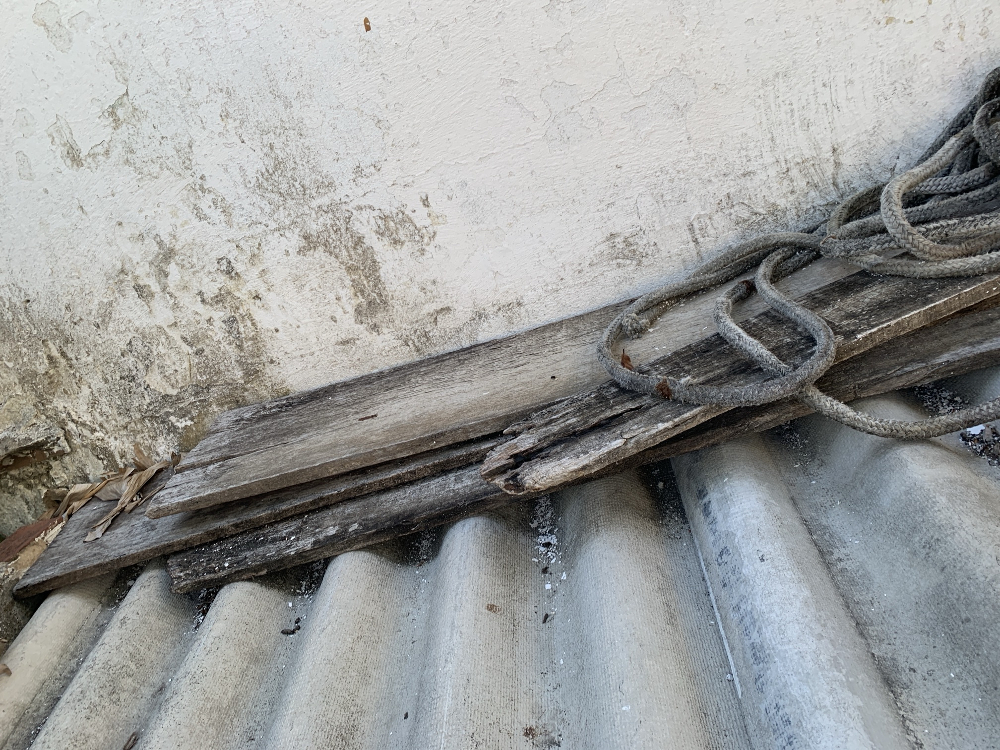

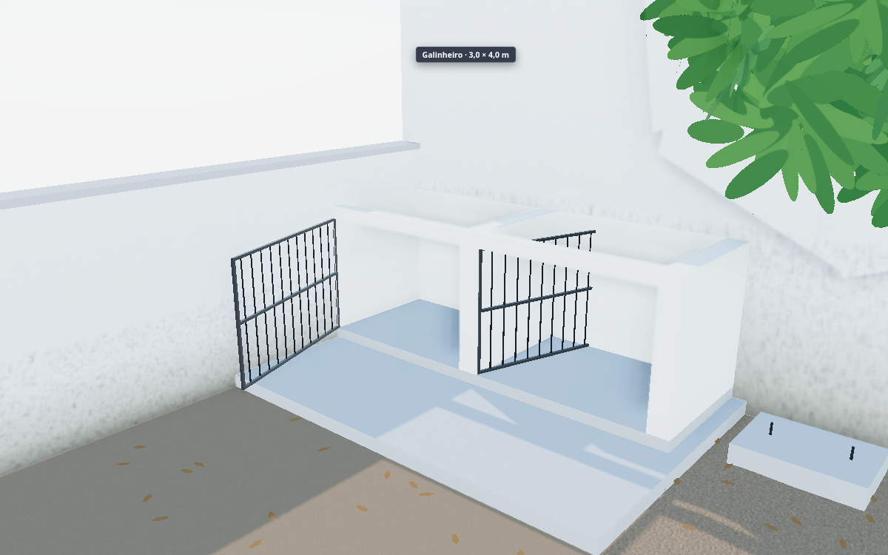
Etapa 1 · Cobertura Subir o telhado (2,05 m → 1,75 m) e parafusar sem contrapeso
- Etapa 1A — 3 Pontaletes + 2 Terças + 3 Caibros (SEM levantar tijolos!):
- Preencha com massa 2:1 os furos abertos dos tijolos no topo das paredes de `1,20 m` (`z = 1,00 m`) e fixe 2 pontaletes de `~62 cm` (parede do meio e da direita) até atingir **`1,82 m`**.
- Na esquerda (onde o muro tem `1,55 m`), parafuse um 3º pontalete curto de `~27 cm` na face interna do muro (de `1,55 m` até `1,82 m`) — não precisa subir tijolo nenhum!
- Fixe a terça do fundo (`1,94 m`) no muro branco, a terça da frente (`1,82 m`) sobre os 3 pontaletes e os 3 caibros inclinados (`2,00 m`, `z = 0..1,45 m`) — reduzindo o balanço livre da telha para apenas **`30 cm`**.
- Etapa 1B — Parafusar telhas + Tela `1/2"` nos vãos:
- Assente as 3 telhas Eternit (`2,05 m → 1,75 m`, caimento 17%) e parafuse só nas duas pontas (fundo e ponta dos caibros em `z = 1,45 m`), sempre na crista da onda com broca `1/4"` e parafuso `5/16" × 110 mm` + EPDM.
- Feche os vãos abertos acima de `1,20 m` (frente e direita) e acima do muro esquerdo de `1,55 m` com tela `1/2"`.
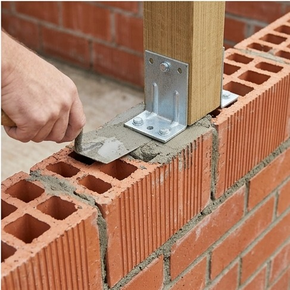
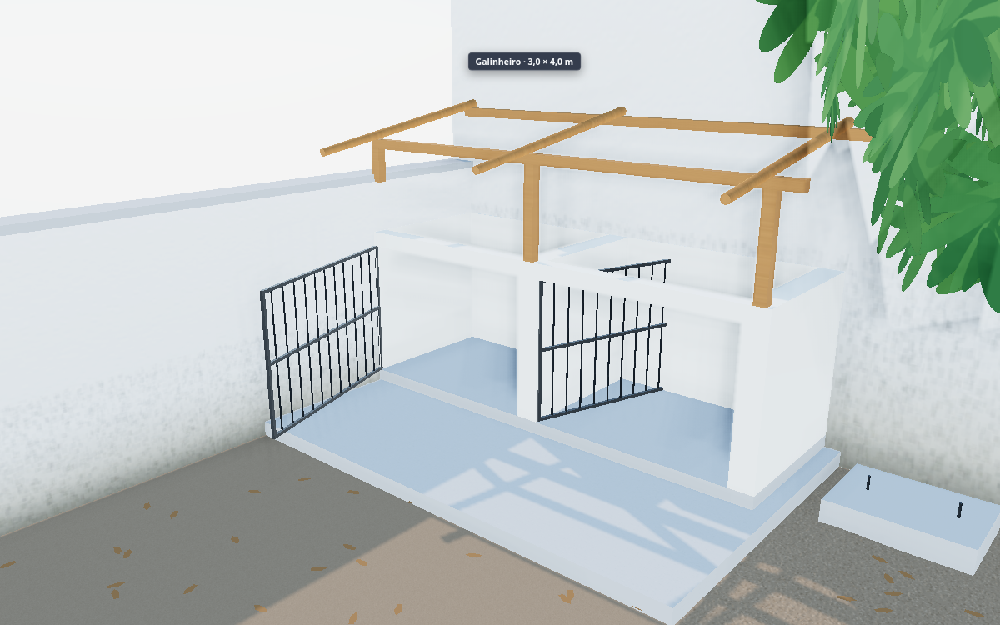
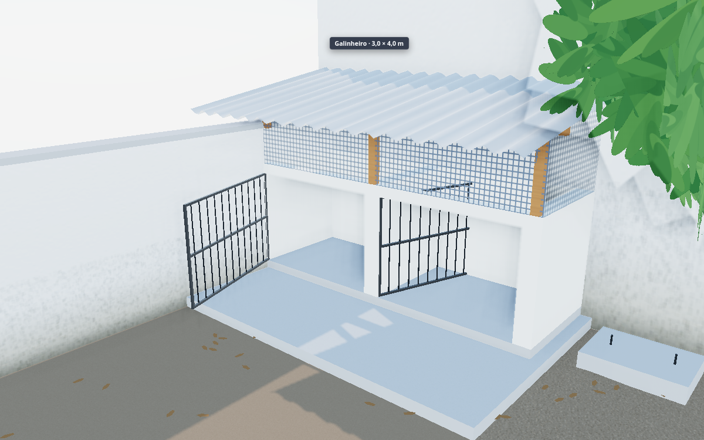
Etapa 2 · Área externa (Econômica, sem coelhos) Solário retangular 3,00 × 2,00 m com 5 estacas
- Etapa 2A — Chumbar apenas 5 estacas de eucalipto na terra (`z ≥ 2,05 m`, enterradas `50 cm`):
- Sem coelhos, não precisa gastar com mureta de tijolo nem cano de dreno!
- Com enxada e pá, abra 5 buracos de `50 cm` na terra (`3` grossas nos cantos da frente e batente da porta; `2` finas no meio da frente e início da terra à direita).
- Chumbe com massa forte (`2 areia : 1 cimento`) mantendo alinhadas com um peso amarrado no barbante (prumo caseiro). Não quebre o patamar cimentado!
- Etapa 2B — Sarrafos (topo + rodapé a 3 cm do chão) + Porta + Tela Hexagonal:
- Feche o topo (`1,70 m`) e também o rodapé inferior (`~3 cm` acima da terra) ligando as estacas com sarrafos `5 × 2,5 cm`. Por que `3 cm` acima (nunca direto na terra)? Assim a madeira não apodrece na umidade/chuva e você consegue esticar e grampear a tela bem retinha em cima e embaixo! (Se sobrar `3 cm` de vão por baixo, encoste pedras/tijolos soltos ou dobre a pontinha da tela.)
- Monte a porta `0,80 × 1,50 m` com diagonal + ferrolho + mosquetão/cadeado.
- Prenda a tela hexagonal `1" × 1,50 m` com grampos `3/4"` nos sarrafos de cima e de baixo. No teto, estique 3 fios de arame nº 14; junto ao beiral, amarre em fio esticado entre estacas (nunca na telha!).
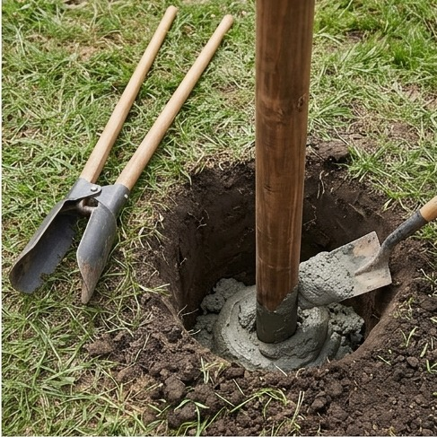

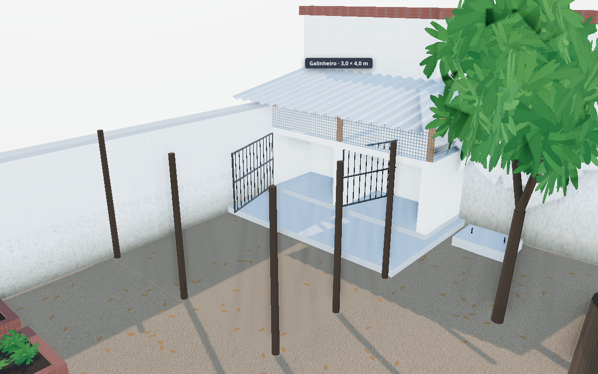
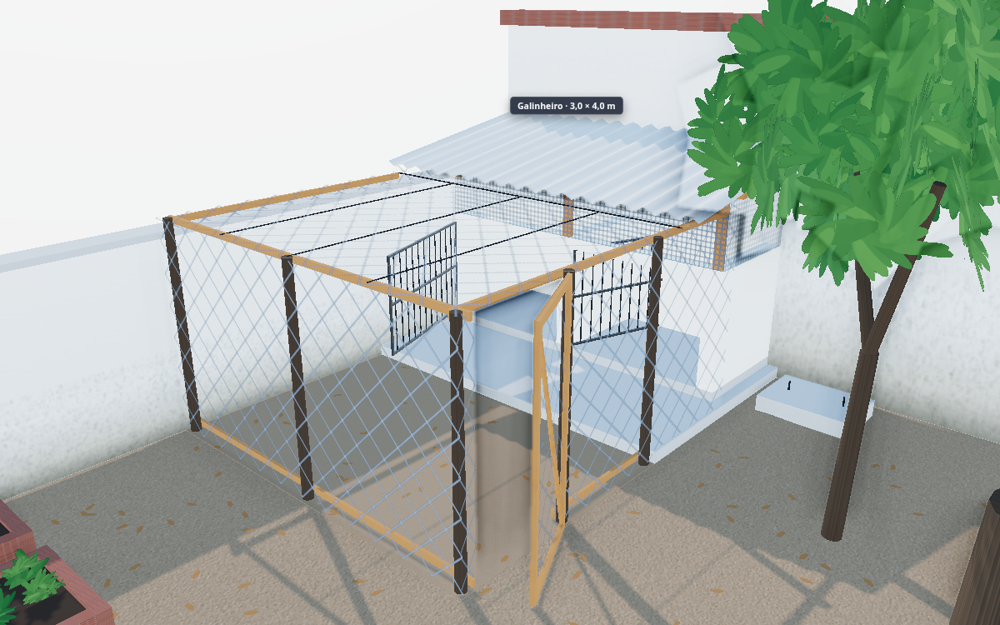
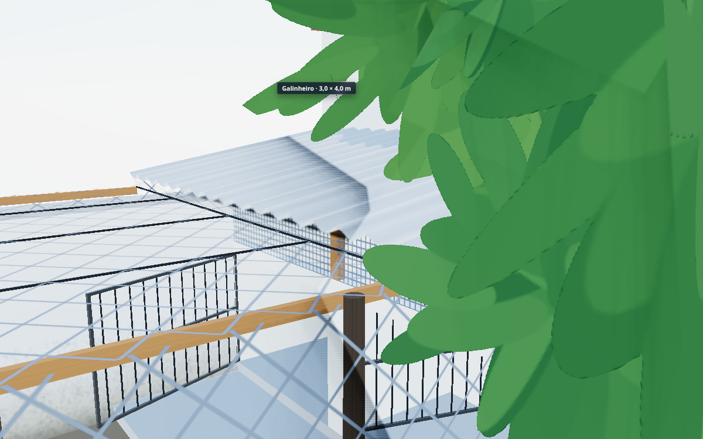
Etapa 3 · Interior Canil 1 (dormitório), Canil 2 (50/50) e Patamar
- Canil 1 (dormitório):
- Fixe 4 calços nas laterais a **`45 cm`** do piso (`30 cm` e `65 cm` da parede do fundo) e apoie **2 poleiros removíveis de `1,30 m`** (`4–5 cm` lixados).
- Espalhe **`5–8 cm` de maravalha grossa** no chão (nunca serragem fina!).
- Na grade: cubra com **tela `1/2"`** e prenda a **lona corta-vento apenas na metade inferior** (`60 cm`).
- Canil 2 (dividido 50% / 50%):
- A **`65 cm`** da parede do meio (`X_DIV = 2,10 m`), monte uma **divisória vertical** de sarrafo + tela `1/2"`, isolando as pilhas de **cerâmicas à direita** (`65 cm`).
- À esquerda (`65 cm`): monte **3 ninhos (`31 × 35 × 32 cm`) em 2 andares** (2 embaixo a `15 cm` + 1 em cima), borda de `10 cm`, **teto inclinado** e 1 ovo falso cada. Cubra a grade com tela `1/2"`.
- Patamar coberto (`1,00 m`, cimento liso):
- Encoste o **comedouro** e o **bebedouro (5 L)** sobre **1 tijolo cada** junto à parede dos canis (100% secos sob o beiral).
- Coloque a **caixa de banho de terra** (areia + cinza) e pote de **calcário/farinha de ostra**.
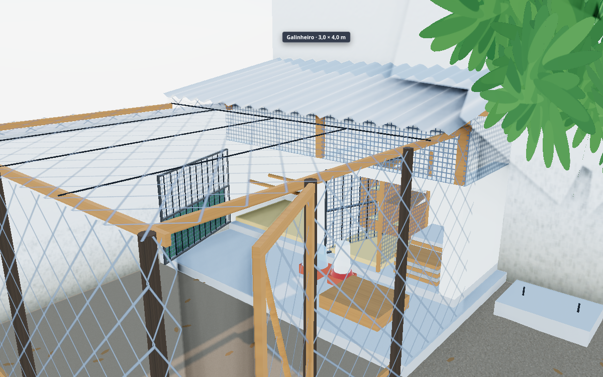
Etapa 4 · Rotina Chegada das aves, folhas secas e resultado final
- Lotação recomendada: com solário de `9 m²` e metade do Canil 2 para cerâmicas, 8 a 10 poedeiras (Lohmann, Isa Brown ou Embrapa 051 — só fêmeas) vivem com mais conforto.
- Cama na terra: espalhe folhas secas do quintal na terra do solário e revire com ancinho 1×/semana (absorve o cocô e vira adubo sem cheiro).
- Rotina diária (2 minutos): de manhã, abra as duas grades e troque a água; raspe os cocôs do patamar; à noite, confira se todas subiram no poleiro do Canil 1 e feche as duas grades.
- Enchente forte (> 20 cm): em previsão de alagamento de `30 cm`, deixe as aves trancadas nos canis elevados (`18–25 cm`) com água e ração dentro.
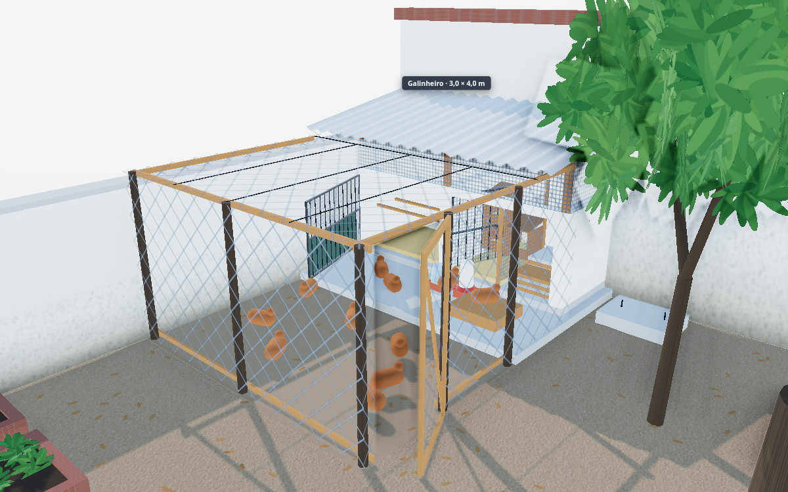